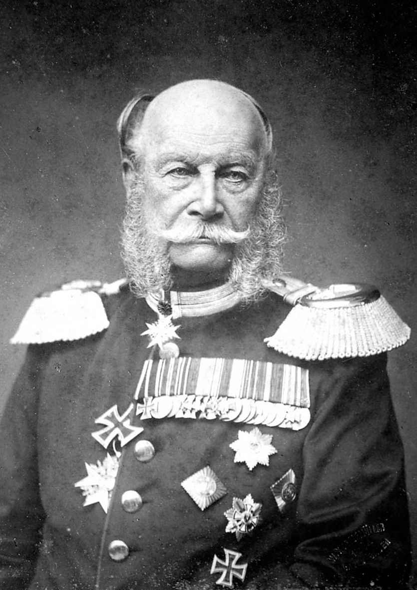

When revolution broke out in Berlin in March 1848, the conservative William’s advocacy of force earned him the sobriquet of “Kartätschenprinz” (Prince of Grapeshot). After a brief exile in England, he returned to Prussia in June 1848, and in 1849 he commanded the troops sent to suppress an insurrection in Baden. William’s mistrust of constitutionalism was mitigated by the lessons of 1848, by his exposure to English political ideas, and by the influence of his consort, Augusta of Saxe-Weimar-Eisenach. (He married this witty and temperamental princess in 1829, after renouncing a youthful love affair with Eliza Radziwill.) Appointed military governor of Rhineland Province in 1849, he made his residence at Coblenz, a centre of opposition to the reactionary policies of Berlin. He described Otto von Bismarck’s ideas as “schoolboy’s politics.” From October 1858 William was regent for his ailing brother, and, on Jan. 2, 1861, William succeeded to the Prussian throne. As regent he made himself popular by proclaiming a “New Era” of liberalism, but he appointed a ministry comprising pronounced conservatives as well as moderate liberals. The problems raised for Prussia in 1859 by the wars for Italian independence were beyond his capacity: while he favoured an alliance with Austria against the France of Napoleon III, he insisted that Prussia have the supreme command on the Rhenish front; and the Austro-French armistice of Villafranca took him by surprise. On internal affairs William’s fundamental conservatism reasserted itself. Backed by his war minister, Albrecht von Roon, and by the chief of the military cabinet, Edwin von Manteuffel, the King insisted on a three-year term of military conscription, which the liberal lower chamber rejected in 1862. William thereupon was ready to abdicate but was dissuaded by Bismarck, whom he installed as prime minister during this crisis. After the Prussian victory in the Seven Weeks’ War against Austria in 1866, the King, despite their frequent disagreements, realized that Bismarck was more necessary to Prussia than he himself was. In 1870, when the Hohenzollern candidature to the Spanish throne was leading to the Franco-German War, William was far more cautious than Bismarck; during the war, he arbitrated between his chief advisers, Bismarck and Helmuth von Moltke. He was distressed by the Kulturkampf that Bismarck and the liberals conducted against the Roman Catholic Church, but in 1877, when Bismarck made his last appeal to be relieved of office, William answered: “Never.” William was so imbued with the traditions of the Prussian monarchy that it was painful for him to accept Bismarck’s foundation of the German Reich and the imperial title, which came to him by a sham offer (arranged by Bismarck) from the German princes. William was acclaimed German emperor (not “emperor of Germany,” which he thought more suitable) at Versailles, in conquered France, on Jan. 18, 1871. General indignation at the two attempts made on his life in 1878 (by Max Hödel on May 11 and by K.E. Nobiling, who seriously wounded him, on June 2) was expressed in popular support for Bismarck’s anti-Socialist legislation.
